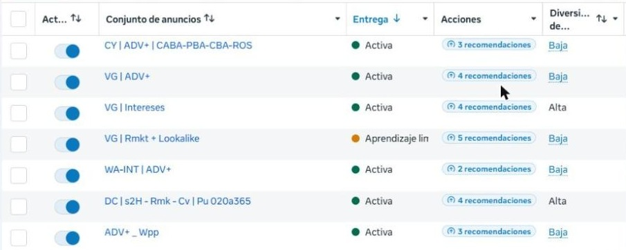
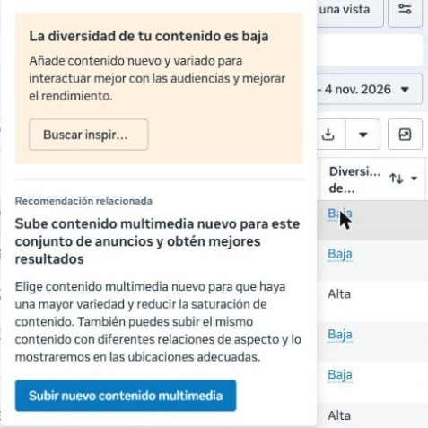
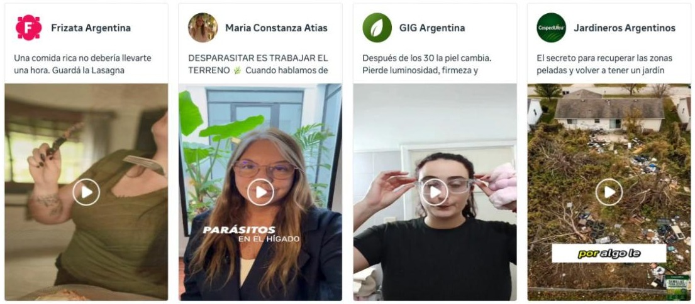
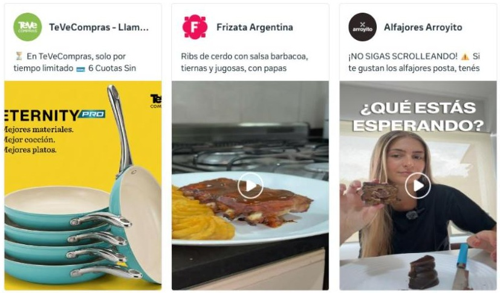

Meta sumó una métrica nueva que mide qué tan distintas son las piezas que mostramos. No es obligatoria ni define por sí sola los resultados, pero es una herramienta nueva que está buena para ir siguiendo. Te contamos qué dice de Frizata y qué contenido nos ayuda a subirla.
Meta califica cada grupo de anuncios como Baja, Media o Alta según qué tan distintas son entre sí las piezas que muestra.
Si dos piezas se parecen mucho (mismo diseño, mismos colores, misma estructura), Meta las toma casi como una sola y deja de mostrar una de las dos. Cuantas más piezas realmente distintas hay, a más gente distinta puede llegar.
Así se ve en nuestro administrador de anuncios. La última columna es la diversidad de cada grupo.

Las 4 placas del Cyber tienen el mismo diseño y Meta las cuenta como una sola. Suman más pocas piezas bien distintas que muchas parecidas.
Cuando la diversidad da baja, Meta sugiere dos cosas: subir contenido nuevo y variado, y subir el mismo contenido en otros tamaños, que también le cuenta como variedad.

Meta muestra 18 ejemplos de anuncios que rinden bien en negocios parecidos. Tres son de Frizata: la Lasagna, los Ribs con papas duquesa y "Rico, rápido y sin renegar". El estilo de UGC que vienen haciendo funciona.


De la misma galería tomamos dos ideas que hoy no tenemos: la foto de producto sobre fondo de color (TeVeCompras) y el video con una frase grande desde el primer segundo (Alfajores Arroyito).
Dale play acá mismo, o descargalos con el link de abajo de cada uno.
Es lo que pide Meta y no hace falta producir nada nuevo. En 1:1 (cuadrado) y 4:5 (vertical de feed):
El producto o el plato servido, solo, sobre un fondo de color liso, con el precio o la oferta grande.
Referencia: TeVeCompras. Hoy todas nuestras piezas fijas son placas de promo.
Persona a cámara probando el producto, con un texto grande desde el primer segundo. Por ejemplo: "¿Todavía cocinás todos los días?".
Referencia: Alfajores Arroyito ("¿Qué estás esperando?").